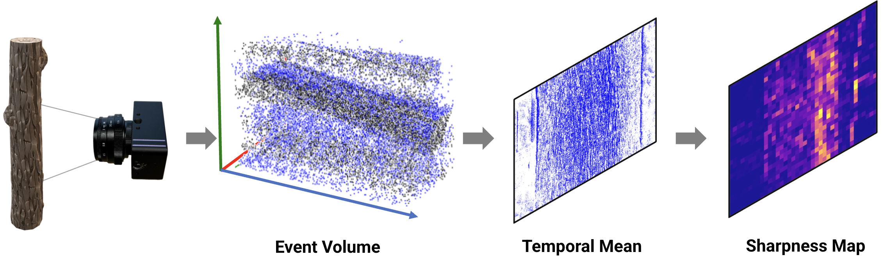

How to read this section
This is a technically grounded proposal, not a proven deployment. The underlying physics of event cameras — asynchronous pixel firing, log intensity detection, zero motion blur — are well established in the literature and have been demonstrated on mobile robots in research settings. The specific application to forklift-mounted warehouse inventory perception is my own analysis of where these properties could solve real failure modes. Open engineering questions remain around calibration at scale, cost, and integration with existing frame-based pipelines.
Forklift-mounted vision systems face a specific and well-known set of failure modes in dense warehouse environments. The two hardest are motion blur under heavy payload and reliable detection in dynamic, cluttered aisles. Below is my analysis of both problems and a proposal — backed by published research — for how event cameras could address them.
Challenge 1 — Motion Blur from Payload Vibration
Forklifts carrying heavy loads generate significant vibration and abrupt motion, particularly during start/stop and turning. Conventional frame-based cameras integrate light over a fixed exposure window — even moderate motion produces smeared images. The heavier the payload, the more pronounced the effect, precisely when reliable perception matters most.
Challenge 2 — Dense, Cluttered, and Dynamic Environments
Warehouse aisles are densely packed with pallets, racking, and workers. Objects are constantly moving — conveyors, workers, other vehicles. Standard cameras and LiDAR suffer from latency that makes it difficult to track fast-moving objects or detect sudden obstructions. Processing every full frame wastes bandwidth when most of the scene is static.
Proposed Solution — Event Camera Integration
Event cameras operate on two fundamental principles that directly address the failure modes above. First, each pixel independently fires an event the moment its log intensity changes — there is no global exposure window, so there is no mechanism by which motion can accumulate blur. A forklift vibrating under a 2,000 lb pallet generates exactly the same crisp edge events as one carrying nothing. Second, pixels that see no brightness change generate zero output — in a warehouse where most of the scene is static racking and floor, the vast majority of pixels are silent. Only moving objects generate signal. This is not a software optimization; it is a hardware property.
A forklift is almost always in motion during operation. This is normally a liability for frame cameras — it causes blur. For an event camera, the vehicle's own motion actively generates depth signal. As the forklift moves, closer objects generate denser, faster-moving event streams than farther objects — this is motion parallax, and optical flow information is inherently encoded in the spatio-temporal event patterns. Research has demonstrated depth inference from events on mobile platforms without active illumination like LiDAR. The key caveat: this works well when the camera is moving; in stationary or very slow scenarios the depth signal weakens and a complementary sensor would be needed.
In a warehouse, most of the scene is static and a small fraction is dynamic. Event cameras are uniquely suited to this: static objects produce zero events in a static camera — only motion generates signal. Even subtle motion — a worker reaching into a shelf, a vehicle crossing an aisle — generates events immediately. This enables a lightweight gating strategy: run full perception only when event density exceeds a threshold, otherwise maintain a low-cost static map. This mirrors the conditional reconstruction approach I built for TapeFlyt, where I triggered ADMM reconstruction only when the obstacle detector fired — reducing onboard compute by over 90% in sparse scenes.
The most realistic path to deployment is fusing an event camera with the existing RGB or depth sensor rather than replacing it. The event camera handles the fast-changing, high-motion regime — obstacle onset during travel, sudden worker appearance, vibration-heavy payload movement. The frame camera handles static scene understanding — pallet identification, label reading, inventory classification. This fusion approach has research support in event-guided depth estimation, where events correct and sharpen frame-camera depth maps specifically in adverse conditions like motion blur and poor lighting.


Event camera pipeline from research — scene generates a 3D event volume (x, y, t), collapsed to a temporal mean, then processed into a sharpness map for downstream detection.
What is well-supported by evidence
The core sensor physics — asynchronous firing, log intensity detection, zero motion blur, ~120 dB dynamic range — are established facts demonstrated across multiple research platforms. Event-based optical flow and depth estimation on mobile robots have been published results. The conditional gating pattern (trigger compute only on motion) is something I have implemented and validated directly in TapeFlyt.
Reasonable but not yet validated for this domain
The specific application to forklift-mounted warehouse inventory perception has not, to my knowledge, been published. The analysis that these properties would address the identified failure modes is sound engineering reasoning — but it would require prototyping and testing to confirm performance on the specific object classes and lighting conditions in a real warehouse.
Open engineering questions
Production-grade calibration and temporal synchronization between event and frame sensors at scale. Event camera cost vs reliability tradeoff in a production warehouse deployment. Performance on low-contrast or uniformly-lit environments where log intensity changes may be small.
Connection to my research: In TapeFlyt, I faced the same core tradeoff — reliable perception on a resource-constrained platform in a degraded sensing environment. The approach I took was to shift the burden of perception onto the sensing physics itself, then gate expensive computation conditionally. The event camera proposal extends that same design philosophy to the warehouse domain. I have not built this system, but I have built and validated the pattern it relies on.